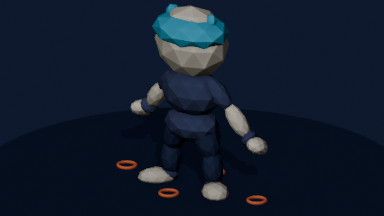
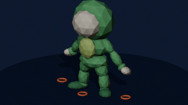

HERO MILESTONE · 384×216
Rig rescue
review board
The left frame in every pair is the deployed failure baseline. The right frame is the shared fixed-length biped, authored move clip and tapered-volume renderer. Images are shown at native logical resolution with nearest-neighbor scaling.
FULL GOLDEN CHAIN
Motion proof
Deterministic 7.2-second captures at 20 drawings per second. No camera effects, particles or motion blur conceal the anatomy.
{kind=link}
{kind=link}
PROFILE 01
KittyKaki
Separated upper/lower limbs, explicit joints and cuffs, directional paws and weighted shoes.
PROFILE 02
Soder
Normal humanoid arms and legs inside the green padded snake kigurumi; the soft tail is decorative only.
NO INTERNAL DETAIL
Silhouette gate
Both profiles at the same move phase, stripped to one color. Move mechanics must survive without costume detail.
OFFLINE ANATOMY SOURCE
One armature, two costumes
The Blender proxy shares every biped bone and constraint. These renders guide anatomy and contacts; they are not runtime sprites.

